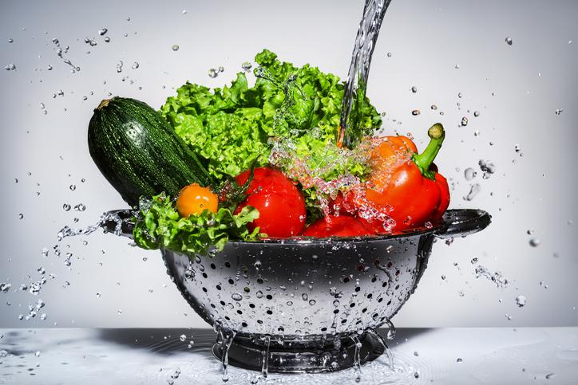
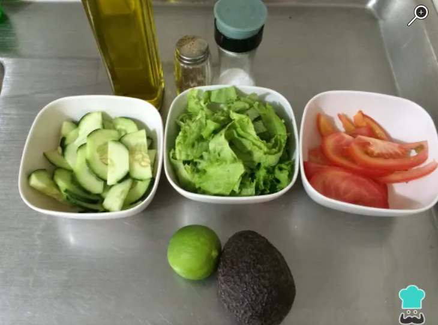
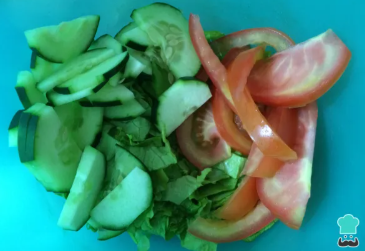
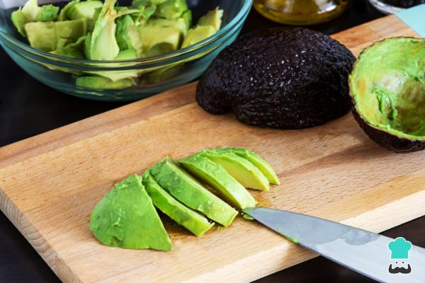
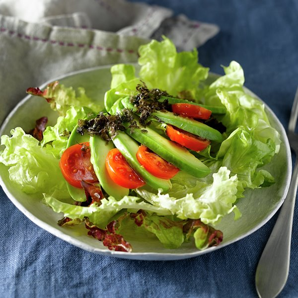

Como preparar un menú saludable
Primer Plato: Ensalada con Aguacate
Indice de Contenido:
- Ingredientes
- Paso a Paso
- Resultado Final
Ingredientes
- Ponemos 1 unidad de Aguacate
- Cogemos 1 unidad de Lechuga
- Cogemos 1 unidad de Tomate
- Añadimos 100 gramos de Pepino
- Agregamos 1 unidad de Limon
- Añadimos 1 cucharada pequeña de Pimienta
- Ponemos 3 cucharadas pequeñas de Aceite de oliva
- Agregamos 1 cucharada pequeña de Sal
Paso a Paso
- Antes de iniciar esta ensalada saludable, tendremos que limpiar todos los ingredientes para quitarles las bacterias.

- Empezaremos separando cada ingrediente trozeado en cada vol para tenerlo ordenado

- En un bol mezcla la lechuga troceada, el pepino y el tomate (cortado en medialuna)

- Para aderezar la ensalada, añadiremos por ultimo el limon, aceite de oliva, la sal y la pimienta.

- Luego mezclaremos para que los ingredientes tengan el sabor
- Por ultimo añadiremos el aguacate

Volver al Indice de Contenidos
RESULTADO FINAL
